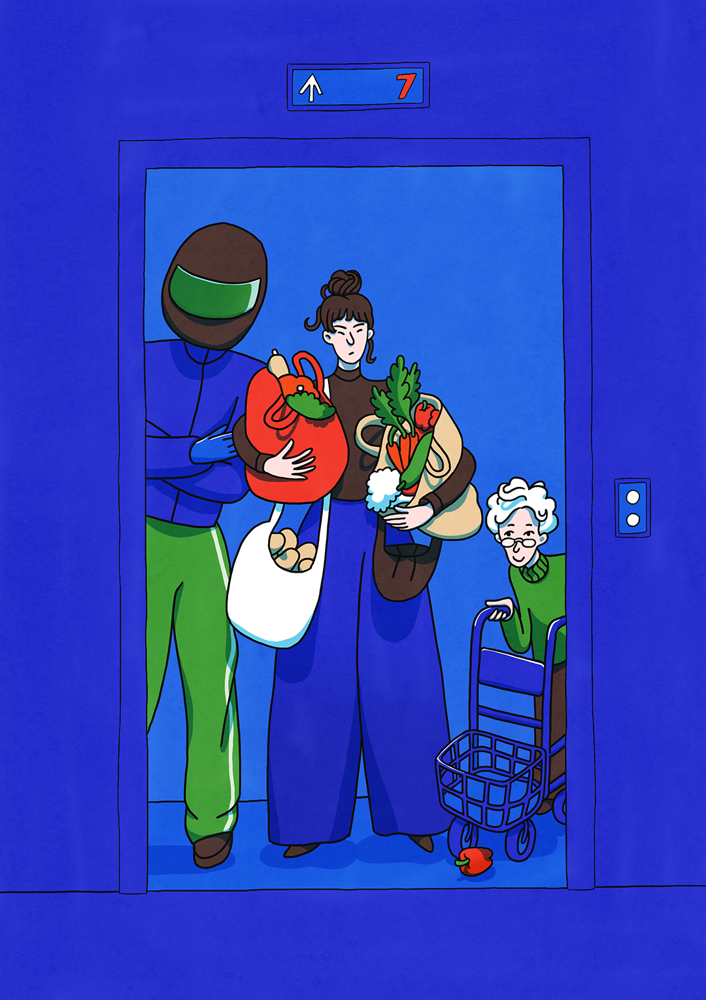
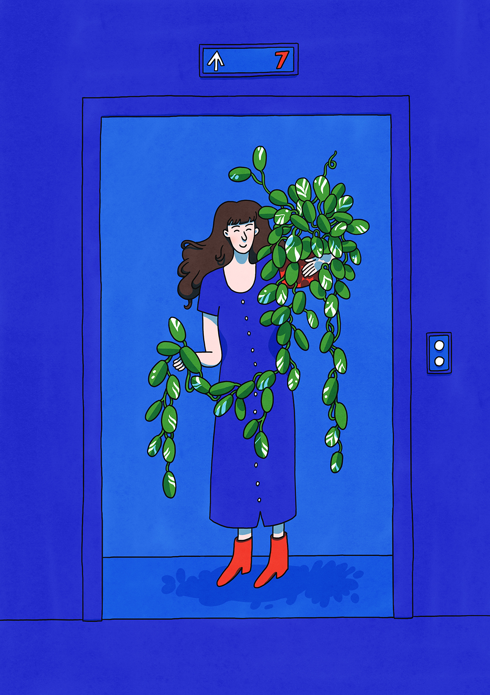

An illustrated animated gif capturing a little part of living in an apartment block: sharing an elevator. These little self portraits are drawn in my signature whimsical style with handdrawn textures resembling watercolors.
I would love to make more of these! I enjoy coming up with ideas to make little bits of illustrations move. This animation style works beautifully for online articles, editorial features and social media content.


Let’s work together!
Send me a creative brief along with your budget and project timeline.